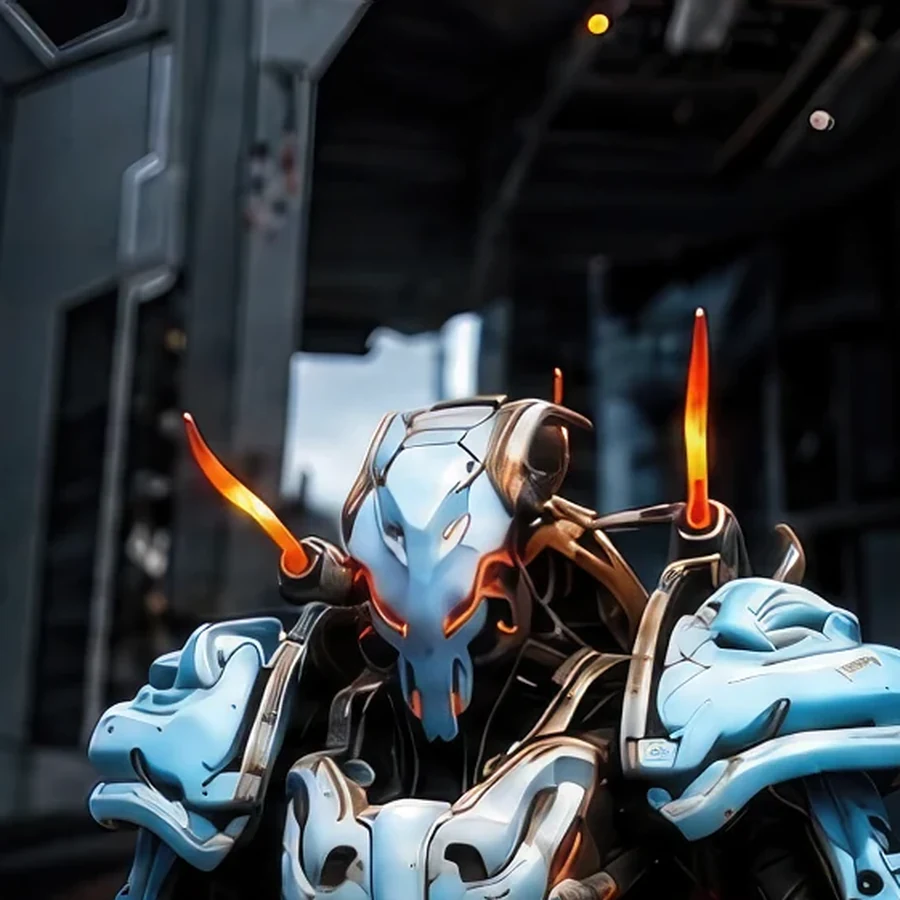
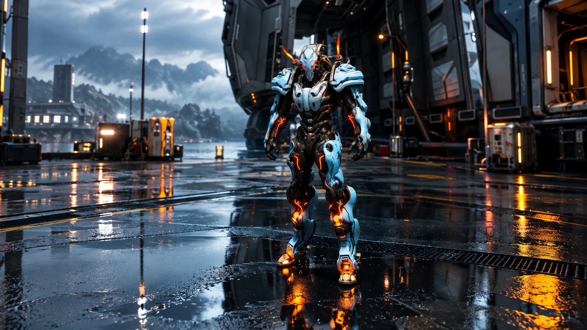
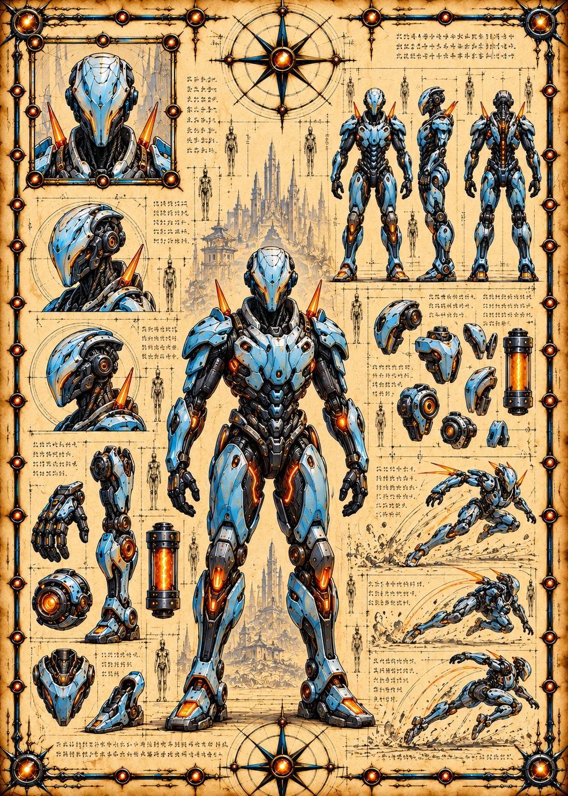

Field Observation
Qor deployed a pink alien power coil among equipment in the lower-left landing bay on Earth 1. The coil supplies hostile alien infrastructure concealed as landing-bay equipment.
GENEZYS ARCHIVE · EARTH 1 · Synthbot
Optic Gunner
Identity & combat record
Archive node 01 / 05

Archive record
Qor's optics were salvaged from a fallen Synthbot, as the Syndicate's Ledger requires: nothing that falls is wasted. The Thermal Ray sweeps the flanks with heat that lingers, and burns twice as hot when only one enemy remains. Qor's pilot claims the old optics still show things that are not there.
Combat signature
Discharges concentrated heat beam: Deals 30 damage to enemies on the edges for 2 rounds. If only 1 enemy is left the damage is doubled.
Genezys 04:02 ™&©2026LEGIONS
Recovered visual record
Archive node 02 / 05

Full frame available // rotate device to landscape
Technical archive
Archive node 03 / 05

Classified field intelligence
Archive node 04 / 05
FIELD REPORT // HOSTILE POWER NODE
Field Observation
Qor deployed a pink alien power coil among equipment in the lower-left landing bay on Earth 1. The coil supplies hostile alien infrastructure concealed as landing-bay equipment.
Environment
Object Analysis
Key Findings
Motion archive
Archive node 05 / 05
Motion record not yet recovered